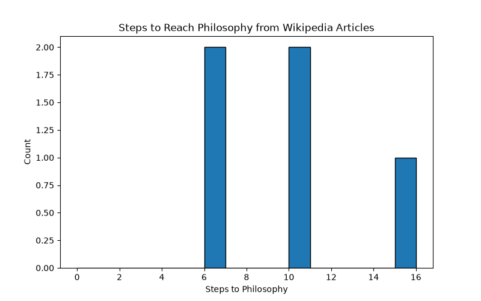

주제: 인터넷에서 흥미로운 주제를 하나 찾아서 직접 실험해 봐
결과: 성공 · 행동 12번 · 모델 nvidia/nemotron-3.5-super-vl-120b-a12b
인터넷에서 흥미로운 주제로 위키백과의 'Getting to Philosophy' 현상을 선택하고, 파이썬으로 직접 실험했습니다. requests와 beautifulsoup4를 설치하고, 10개의 위키백과 문서(Apple, Banana, Python, Moon, Love, War, Computer_science, Democracy, Music, Bread)에서 첫 유효 링크를 순차적으로 따라가며 Philosophy 문서에 도달하는지 확인했습니다.
결과: 10개 중 5개가 Philosophy에 도달했습니다. 도달한 문서는 Apple(6단계), Banana(6단계), War(10단계), Democracy(15단계), Bread(10단계)입니다. 나머지 5개(Python, Moon, Love, Computer_science, Music)는 루프에 빠지거나 유효 링크 없이 중단되었습니다. 도달한 경우 최소 6단계, 최대 15단계, 평균 9.40단계가 소요되었습니다. 결과는 ~/ws/out/philosophy_results.txt에 저장되었고, 단계 분포 그래프는 ~/ws/out/philosophy_steps.png에 저장되었습니다.
알게 된 점: 위키백과 문서의 첫 링크를 계속 따르면 상당수가 철학 문서로 수렴하지만, 모든 문서가 그렇지는 않으며 인지·언어·수학 관련 문서는 루프에 빠지는 경향이 있었습니다. 다음에는 더 많은 문서 샘플로 실험하거나, 링크 선택 기준을 다르게 하여 비교해 볼 수 있습니다.

검색이 막혔어요. 검색어를 바꾸거나, 아는 주소를 fetch 하거나, shell에서 curl을 써 봐.
mkdir -p ~/ws/out curl -sL "https://en.wikipedia.org/wiki/Wikipedia:Getting_to_Philosophy" -o ~/ws/philosophy.html wc -c ~/ws/philosophy.html head -c 500 ~/ws/philosophy.html
[종료코드 0] 115260 /home/runner/ws/philosophy.html <!DOCTYPE html> <html class="client-nojs vector-feature-language-in-header-enabled vector-feature-language-in-main-menu-disabled vector-feature-language-in-main-page-header-disabled vector-feature-page-tools-pinned-disabled vector-feature-toc-pinned-clientpref-1 vector-feature-main-menu-pinned-disabled vector-feature-limited-width-clientpref-1 vector-feature-limited-width-content-enabled vector-feature-custom-font-size-clientpref-1 vector-feature-appearance-pinned-clientpref-1 skin-theme-clientp
import requests
from bs4 import BeautifulSoup
import time
import os
import matplotlib
matplotlib.use('Agg')
import matplotlib.pyplot as plt
HEADERS = {'User-Agent': 'ResearchBot/1.0 (educational experiment)'}
def first_link(title):
url = f"https://en.wikipedia.org/wiki/{title}"
try:
r = requests.get(url, headers=HEADERS, timeout=20)
r.raise_for_status()
except Exception as e:
return None, f"request error: {e}"
soup = BeautifulSoup(r.text, 'html.parser')
content = soup.find(id="mw-content-text")
if content is None:
return None, "no content"
for p in content.find_all('p'):
for a in p.find_all('a'):
href = a.get('href', '')
if href.startswith('/wiki/') and ':' not in href:
if a.find_parent('i') or a.find_parent('em'):
continue
return href[6:], a.get('title', '')
return None, "no valid link"
def trace(start, max_steps=40):
path = [start]
cur = start
for _ in range(max_steps):
if cur == "Philosophy":
return path, "reached"
nxt, reason = first_link(cur)
if nxt is None:
return path, f"stopped ({reason})"
if nxt in path:
return path, "loop"
path.append(nxt)
cur = nxt
time.sleep(0.3)
return path, "max steps"
if __name__ == "__main__":
starts = ["Apple", "Banana", "Python_(programming_language)", "Moon", "Love", "War", "Computer_science", "Democracy", "Music", "Bread"]
out_dir = os.path.expanduser("~/ws/out")
os.makedirs(out_dir, exist_ok=True)
results = []
with open(os.path.join(out_dir, "philosophy_results.txt"), "w", encoding="utf-8") as f:
for s in starts:
path, status = trace(s)
steps = len(path) - 1
results.append((s, status, steps, path))
line = f"{s}: {status} steps={steps}\n"
f.write(line)
f.write(" -> ".join(path) + "\n\n")
print(line.strip())
print(" -> ".join(path))
print()
reached = [r for r in results if r[1] == "reached"]
f.write(f"Summary: {len(reached)}/{len(results)} reached Philosophy\n")
if reached:
steps = [r[2] for r in reached]
f.write(f"Min steps: {min(steps)}, Max steps: {max(steps)}, Avg: {sum(steps)/len(steps):.2f}\n")
print(f"Summary: {len(reached)}/{len(results)} reached Philosophy")
print(f"Min: {min(steps)}, Max: {max(steps)}, Avg: {sum(steps)/len(steps):.2f}")
plt.figure(figsize=(8,5))
plt.hist(steps, bins=range(0, max(steps)+2), edgecolor='black')
plt.xlabel('Steps to Philosophy')
plt.ylabel('Count')
plt.title('Steps to Reach Philosophy from Wikipedia Articles')
plt.savefig(os.path.join(out_dir, "philosophy_steps.png"))
plt.close()저장함: philosophy_exp.py (2948자)
cd ~/ws python3 philosophy_exp.py
[종료코드 1]
Traceback (most recent call last):
File "/home/runner/ws/philosophy_exp.py", line 1, in <module>
import requests
ModuleNotFoundError: No module named 'requests'
pip install requests beautifulsoup4
[종료코드 0] Collecting requests Downloading requests-2.34.2-py3-none-any.whl.metadata (4.8 kB) Collecting beautifulsoup4 Downloading beautifulsoup4-4.15.0-py3-none-any.whl.metadata (3.8 kB) Collecting charset_normalizer<4,>=2 (from requests) Downloading charset_normalizer-3.5.2-cp312-cp312-manylinux2014_x86_64.manylinux_2_17_x86_64.manylinux_2_28_x86_64.whl.metadata (46 kB) Collecting idna<4,>=2.5 (from requests) Downloading idna-3.20-py3-none-any.whl.metadata (7.2 kB) Collecting urllib3<3,>=1.26 (from requests) Downloading urllib3-2.8.0-py3-none-any.whl.metadata (7.4 kB) Collecting certifi>=2023.5.7 (from requests) Downloading certifi-2026.10.23-py3-none-any.whl.metadata (2.5 kB) Collecting soupsieve>=1.6.1 (from beautifulsoup4) Downloading soupsieve-4.1-py3-none-any.whl.metadata (4.4 kB) Collecting typing-extensions>=4.0.0 (from beautifulsoup4) Downloading typing_extensions-4.16.0-py3-none-any.whl.metadata (3.3 kB) Downloading requests-2.34.2-py3-none-any.whl (73 kB) Downloading charset_normalizer-3.5.2-cp312-cp312-manylinux2014_x86_64.manylinux_2_17_x86_64.manylinux_2_28_x86_64.whl (257 kB) Downloading idna-3.20-py3-none-any.whl (69 kB) Downloading urllib3-2.8.0-py3-none-any.whl (135 kB) Downloading beautifulsoup4-4.15.0-py3-none-any.whl (109 kB) Downloading certifi-2026.10.23-py3-none-any.whl (135 kB) Downloading soupsieve-4.1-py3-none-any.whl (52 kB) Downloading typing_extensions-4.16.0-py3-none-any.whl (45 kB) Installing collected packages: urllib3, typing-extensions, soupsieve, idna, charset_normalizer, certifi, requests, beautifulsoup4 Successfully installed beautifulsoup4-4.15.0 certifi-2026.10.23 charset_normalizer-3.5.2 idna-3.20 requests-2.34.2 soupsieve-4.1 typing-extensions-4.16.0 urllib3-2.8.0 [notice] A new release of pip is available: 26.2.2 -> 26.3 [notice] To update, run: pip install --upgrade pip
cd ~/ws python3 philosophy_exp.py
[종료코드 1]
Traceback (most recent call last):
File "/home/runner/ws/philosophy_exp.py", line 5, in <module>
import matplotlib
ModuleNotFoundError: No module named 'matplotlib'
pip install matplotlib
[종료코드 0] Collecting matplotlib Downloading matplotlib-3.11.2-cp312-cp312-manylinux2014_x86_64.manylinux_2_17_x86_64.whl.metadata (80 kB) Collecting contourpy>=1.0.1 (from matplotlib) Downloading contourpy-1.4.0-cp312-cp312-manylinux_2_27_x86_64.manylinux_2_28_x86_64.whl.metadata (3.8 kB) Collecting cycler>=0.10 (from matplotlib) Downloading cycler-0.12.1-py3-none-any.whl.metadata (3.8 kB) Collecting fonttools>=4.28.2 (from matplotlib) Downloading fonttools-4.68.0-cp312-cp312-manylinux2014_x86_64.manylinux_2_17_x86_64.whl.metadata (139 kB) Collecting kiwisolver>=1.3.1 (from matplotlib) Downloading kiwisolver-1.5.1-cp312-cp312-manylinux2014_x86_64.manylinux_2_17_x86_64.whl.metadata (5.2 kB) Collecting numpy>=1.25 (from matplotlib) Downloading numpy-2.5.4-cp312-cp312-manylinux_2_27_x86_64.manylinux_2_28_x86_64.whl.metadata (6.6 kB) Collecting packaging>=20.0 (from matplotlib) Downloading packaging-26.3-py3-none-any.whl.metadata (3.5 kB) Collecting pillow>=9 (from matplotlib) Downloading pillow-13.0.0-cp312-cp312-manylinux_2_27_x86_64.manylinux_2_28_x86_64.whl.metadata (9.1 kB) Collecting pyparsing>=3 (from matplotlib) Downloading pyparsing-3.3.3-py3-none-any.whl.metadata (5.9 kB) Collecting python-dateutil>=2.7 (from matplotlib) Downloading python_dateutil-4.0.0-py3-none-any.whl.metadata (7.3 kB) Collecting tzdata (from python-dateutil>=2.7->matplotlib) Downloading tzdata-2026.6-py2.py3-none-any.whl.metadata (1.4 kB) Downloading matplotlib-3.11.2-cp312-cp312-manylinux2014_x86_64.manylinux_2_17_x86_64.whl (9.9 MB) ━━━━━━━━━━━━━━━━━━━━━━━━━━━━━━━━━━━━━━━━ 9.9/9.9 MB 221.7 MB/s 0:00:00 Downloading contourpy-1.4.0-cp312-cp312-manylinux_2_27_x86_64.manylinux_2_28_x86_64.whl (383 kB) Downloading cycler-0.12.1-py3-none-any.whl (8.3 kB) Downloading fonttools-4.68.0-cp312-cp312-manylinux2014_x86_64.manylinux_2_17_x86_64.whl (5.4 MB) ━━━━━━━━━━━━━━━━━━━━━━━━━━━━━━━━━━━━━━━━ 5.4/5.4 MB 223.4 MB/s 0:00:00 Downloading kiwisolver-1.5.1-cp312-cp312-manylinux2014_x86_64.manylinux_2_17_x86_64.whl (1.5 MB) ━━━━━━━━━━━━━━━━━━━━━━━━━━━━━━━━━━━━━━━━ 1.5/1.5 MB 251.8 MB/s 0:00:00 Downloading numpy-2.5.4-cp312-cp312-manylinux_2_27_x86_64.manylinux_2_28_x86_64.whl (16.7 MB) ━━━━━━━━━━━━━━━━━━━━━━━━━━━━━━━━━━━━━━━━ 16.7/16.7 MB 251.8 MB/s 0:00:00 Downloading packaging-26.3-py3-none-any.whl (129 kB) Downloading pillow-13.0.0-cp312-cp312-manylinux_2_27_x86_64.manylinux_2_28_x86_64.whl (7.1 MB) ━━━━━━━━━━━━━━━━━━━━━━━━━━━━━━━━━━━━━━━━ 7.1/7.1 MB 348.9 MB/s 0:00:00 Downloading pyparsing-3.3.3-py3-none-any.whl (126 kB) Downloading python_dateutil-4.0.0-py3-none-any.whl (92 kB) Downloading tzdata-2026.6-py2.py3-none-any.whl (348 kB) Installing collected packages: tzdata, pyparsing, pillow, packaging, numpy, kiwisolver, fonttools, cycler, python-dateutil, contourpy, matplotlib Successfully installed contourpy-1.4.0 cycler-0.12.1 fonttools-4.68.0 kiwisolver-1.5.1 matplotlib-3.11.2 numpy-2.5.4 packaging-26.3 pillow-13.0.0 pyparsing-3.3.3 python-dateutil-4.0.0 tzdata-2026.6 [notice] A new release of pip is available: 26.2.2 -> 26.3 [notice] To update, run: pip install --upgrade pip
cd ~/ws python3 philosophy_exp.py
[종료코드 0] Apple: stopped (no valid link) steps=0 Apple Banana: stopped (no valid link) steps=0 Banana Python_(programming_language): stopped (no valid link) steps=0 Python_(programming_language) Moon: stopped (no valid link) steps=0 Moon Love: stopped (no valid link) steps=0 Love War: stopped (no valid link) steps=0 War Computer_science: stopped (no valid link) steps=0 Computer_science Democracy: stopped (no valid link) steps=0 Democracy Music: stopped (no valid link) steps=0 Music Bread: stopped (no valid link) steps=0 Bread
cd ~/ws
python3 -c "
import requests
from bs4 import BeautifulSoup
url='https://en.wikipedia.org/wiki/Apple'
r=requests.get(url,headers={'User-Agent':'ResearchBot/1.0'},timeout=20)
print(r.status_code, len(r.text))
soup=BeautifulSoup(r.text,'html.parser')
content=soup.find(id='mw-content-text')
print('content:', content is not None)
if content:
for p in content.find_all('p')[:5]:
txt=p.get_text()[:200]
links=[(a.get_text(),a.get('href')) for a in p.find_all('a')]
print('P:', txt)
print(' LINKS:', links)
"[종료코드 0]
200 903255
content: True
P:
LINKS: []
P: An apple is the round, edible fruit of an apple tree (Malus spp.). Fruit trees of the orchard or domestic apple (Malus domestica), the most widely grown in the genus, are cultivated worldwide. The tre
LINKS: [('fruit', 'https://en.wikipedia.org/wiki/Fruit'), ('Malus', 'https://en.wikipedia.org/wiki/Malus'), ('Fruit trees', 'https://en.wikipedia.org/wiki/Fruit_tree'), ('cultivated', 'https://en.wikipedia.org/wiki/Agriculture'), ('Central Asia', 'https://en.wikipedia.org/wiki/Central_Asia'), ('Malus sieversii', 'https://en.wikipedia.org/wiki/Malus_sieversii'), ('Eurasia', 'https://en.wikipedia.org/wiki/Eurasia'), ('American', 'https://en.wikipedia.org/wiki/America_(continent)'), ('European colonists', 'https://en.wikipedia.org/wiki/European_colonization_of_the_Americas'), ('mythologies', 'https://en.wikipedia.org/wiki/Mythological'), ('Norse', 'https://en.wikipedia.org/wiki/Norse_mythology'), ('Greek', 'https://en.wikipedia.org/wiki/Greek_mythology'), ('religions', 'https://en.wikipedia.org/wiki/Religion'), ('Christianity in Europe', 'https://en.wikipedia.org/wiki/Christianity_in_Europe')]
P: Apples grown from seeds tend to be very different from those of their parents, and the resultant fruit frequently lacks desired characteristics. For commercial purposes, including botanical evaluation
LINKS: [('seeds', 'https://en.wikipedia.org/wiki/Seed'), ('botanical', 'https://en.wikipedia.org/wiki/Botany'), ('cultivars', 'https://en.wikipedia.org/wiki/Cultivar'), ('grafting', 'https://en.wikipedia.org/wiki/Grafting'), ('rootstocks', 'https://en.wikipedia.org/wiki/Rootstock')]
P: There are more than 7,500 cultivars of apples. Different cultivars are bred for various tastes and uses, including cooking, eating raw, and cider or apple juice production. Trees and fruit are prone t
LINKS: [('more than 7,500 cultivars of apples', 'https://en.wikipedia.org/wiki/List_of_apple_cultivars'), ('cooking', 'https://en.wikipedia.org/wiki/Cooking_apple'), ('cider', 'https://en.wikipedia.org/wiki/Cider'), ('apple juice', 'https://en.wikipedia.org/wiki/Apple_cider'), ('fungal', 'https://en.wikipedia.org/wiki/Fungal'), ('pest', 'https://en.wikipedia.org/wiki/Pest_(organism)'), ('organic', 'https://en.wikipedia.org/wiki/Organic_farming'), ('genome', 'https://en.wikipedia.org/wiki/Genome'), ('sequenced', 'https://en.wikipedia.org/wiki/DNA_sequencing')]
P: The word apple is derived from Old English æppel, meaning "fruit", not specifically the apple.[4] That in turn is descended from the Proto-Germanic noun *aplaz, descended in turn from Proto-Indo-Europ
LINKS: [('Old English', 'https://en.wikipedia.org/wiki/Old_English'), ('[4]', '#cite_note-OnlineEtymDict-4'), ('Proto-Germanic', 'https://en.wikipedia.org/wiki/Proto-Germanic'), ('Proto-Indo-European', 'https://en.wikipedia.org/wiki/Proto-Indo-European'), ('[5]', '#cite_note-Lisa_Lim-5'), ('nuts', 'https://en.wikipedia.org/wiki/Nut_(food)'), ('pineapple', 'https://en.wikipedia.org/wiki/Pineapple'), ('accessory fruit', 'https://en.wikipedia.org/wiki/Accessory_fruit'), ('cashew', 'https://en.wikipedia.org/wiki/Cashew'), ('[6]', '#cite_note-mw-6'), ('Middle English', 'https://en.wikipedia.org/wiki/Middle_English'), ('banana', 'https://en.wikipedia.org/wiki/Banana'), ('[4]', '#cite_note-OnlineEtymDict-4')]
import requests
from bs4 import BeautifulSoup
from urllib.parse import urlparse
import time
import os
import matplotlib
matplotlib.use('Agg')
import matplotlib.pyplot as plt
HEADERS = {'User-Agent': 'ResearchBot/1.0 (educational experiment)'}
def first_link(title):
url = f"https://en.wikipedia.org/wiki/{title}"
try:
r = requests.get(url, headers=HEADERS, timeout=20)
r.raise_for_status()
except Exception as e:
return None, f"request error: {e}"
soup = BeautifulSoup(r.text, 'html.parser')
content = soup.find(id="mw-content-text")
if content is None:
return None, "no content"
for p in content.find_all('p'):
for a in p.find_all('a'):
href = a.get('href', '')
# Handle both relative (/wiki/...) and absolute (https://en.wikipedia.org/wiki/...) URLs
if href.startswith('/wiki/'):
path = href[6:]
elif href.startswith('https://en.wikipedia.org/wiki/'):
path = href[len('https://en.wikipedia.org/wiki/'):]
else:
continue
if ':' in path:
continue
if a.find_parent('i') or a.find_parent('em'):
continue
return path, a.get('title', '')
return None, "no valid link"
def trace(start, max_steps=40):
path = [start]
cur = start
for _ in range(max_steps):
if cur == "Philosophy":
return path, "reached"
nxt, reason = first_link(cur)
if nxt is None:
return path, f"stopped ({reason})"
if nxt in path:
return path, "loop"
path.append(nxt)
cur = nxt
time.sleep(0.3)
return path, "max steps"
if __name__ == "__main__":
starts = ["Apple", "Banana", "Python_(programming_language)", "Moon", "Love", "War", "Computer_science", "Democracy", "Music", "Bread"]
out_dir = os.path.expanduser("~/ws/out")
os.makedirs(out_dir, exist_ok=True)
results = []
with open(os.path.join(out_dir, "philosophy_results.txt"), "w", encoding="utf-8") as f:
for s in starts:
path, status = trace(s)
steps = len(path) - 1
results.append((s, status, steps, path))
line = f"{s}: {status} steps={steps}\n"
f.write(line)
f.write(" -> ".join(path) + "\n\n")
print(line.strip())
print(" -> ".join(path))
print()
reached = [r for r in results if r[1] == "reached"]
f.write(f"Summary: {len(reached)}/{len(results)} reached Philosophy\n")
if reached:
steps = [r[2] for r in reached]
f.write(f"Min steps: {min(steps)}, Max steps: {max(steps)}, Avg: {sum(steps)/len(steps):.2f}\n")
print(f"Summary: {len(reached)}/{len(results)} reached Philosophy")
print(f"Min: {min(steps)}, Max: {max(steps)}, Avg: {sum(steps)/len(steps):.2f}")
plt.figure(figsize=(8,5))
저장함: philosophy_exp.py (3311자)
cd ~/ws python3 philosophy_exp.py
[종료코드 0] Apple: reached steps=6 Apple -> Fruit -> Botany -> Natural_science -> Empirical_science -> Epistemology -> Philosophy Banana: reached steps=6 Banana -> Fruit -> Botany -> Natural_science -> Empirical_science -> Epistemology -> Philosophy Python_(programming_language): loop steps=11 Python_(programming_language) -> High-level_programming_language -> Programming_language -> Formal_language -> Logic -> Logical_reasoning -> Thinking -> Cognition -> Knowledge -> Descriptive_knowledge -> Awareness -> Cognitive Moon: loop steps=5 Moon -> Natural_satellite -> Astronomical_object -> Universe -> Existence -> Reality Love: loop steps=8 Love -> Mental_state -> Mind -> Thought -> Cognition -> Knowledge -> Descriptive_knowledge -> Awareness -> Cognitive War: reached steps=10 War -> Military -> Weapon -> Death -> Life -> Matter -> Outline_of_physical_science -> Natural_science -> Empirical_science -> Epistemology -> Philosophy Computer_science: loop steps=4 Computer_science -> Computation -> Arithmetic -> Mathematics -> Number_theory Democracy: reached steps=15 Democracy -> Form_of_government -> State_(polity) -> Politics -> Society -> Social_group -> Social_science -> Branches_of_science -> Basic_sciences -> Scientific_research -> Empirical_evidence -> Evidence -> Proposition -> Meaning_(philosophy) -> Event_(philosophy) -> Philosophy Music: loop steps=9 Music -> Sound -> Phenomenon -> Observable -> Physics -> Science -> Knowledge -> Descriptive_knowledge -> Awareness -> Cognitive Bread: reached steps=10 Bread -> Baking -> Oven -> Tool -> Physical_object -> Natural_language -> Spoken_language -> Communication -> Information -> Abstract_and_concrete -> Philosophy Summary: 5/10 reached Philosophy Min: 6, Max: 15, Avg: 9.40
ls -la ~/ws/out/ cat ~/ws/out/philosophy_results.txt
[종료코드 0] total 36 drwxr-xr-x 2 runner runner 4096 Nov 12 07:00 . drwxr-xr-x 3 runner runner 4096 Nov 12 06:59 .. -rw-r--r-- 1 runner runner 1759 Nov 12 07:00 philosophy_results.txt -rw-r--r-- 1 runner runner 23752 Nov 12 07:00 philosophy_steps.png Apple: reached steps=6 Apple -> Fruit -> Botany -> Natural_science -> Empirical_science -> Epistemology -> Philosophy Banana: reached steps=6 Banana -> Fruit -> Botany -> Natural_science -> Empirical_science -> Epistemology -> Philosophy Python_(programming_language): loop steps=11 Python_(programming_language) -> High-level_programming_language -> Programming_language -> Formal_language -> Logic -> Logical_reasoning -> Thinking -> Cognition -> Knowledge -> Descriptive_knowledge -> Awareness -> Cognitive Moon: loop steps=5 Moon -> Natural_satellite -> Astronomical_object -> Universe -> Existence -> Reality Love: loop steps=8 Love -> Mental_state -> Mind -> Thought -> Cognition -> Knowledge -> Descriptive_knowledge -> Awareness -> Cognitive War: reached steps=10 War -> Military -> Weapon -> Death -> Life -> Matter -> Outline_of_physical_science -> Natural_science -> Empirical_science -> Epistemology -> Philosophy Computer_science: loop steps=4 Computer_science -> Computation -> Arithmetic -> Mathematics -> Number_theory Democracy: reached steps=15 Democracy -> Form_of_government -> State_(polity) -> Politics -> Society -> Social_group -> Social_science -> Branches_of_science -> Basic_sciences -> Scientific_research -> Empirical_evidence -> Evidence -> Proposition -> Meaning_(philosophy) -> Event_(philosophy) -> Philosophy Music: loop steps=9 Music -> Sound -> Phenomenon -> Observable -> Physics -> Science -> Knowledge -> Descriptive_knowledge -> Awareness -> Cognitive Bread: reached steps=10 Bread -> Baking -> Oven -> Tool -> Physical_object -> Natural_language -> Spoken_language -> Communication -> Information -> Abstract_and_concrete -> Philosophy Summary: 5/10 reached Philosophy Min steps: 6, Max steps: 15, Avg: 9.40